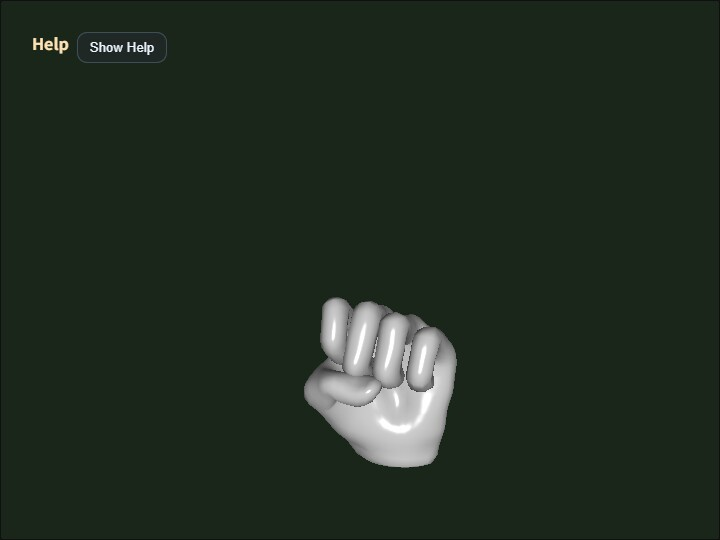

collada_loader
English | 日本語

概要
- main.js 内で指定した Collada (.dae) ファイルを読み込み、ModelAsset に正規化してから表示するサンプルです。
- WebgApp.loadModel() から Collada facade を呼び、parse から ModelAsset / runtime 生成までを共通入口で扱うサンプルです。
- 読み込んだ ModelAsset は D キーで JSON ファイルとしてダウンロードできます。
- Blender から Collada (.dae) を export する場合も、Y-up で出力したファイルを前提とします。
- loader の model origin policy は、スキニングモデルでは skeleton root、非スキニングモデルでは mesh node を原点とします。
実行方法
- 実行ファイルは ./collada_loader.html です
- WebGPU に対応したブラウザで開き、必要に応じて Help Panel と CommandPalette を合わせて確認してください
使用している webg 機能
- WebgApp: 標準初期化、描画ループ、Help Panel 表示
- CommandPalette: animation 操作、wireframe、screenshot、JSON 出力、camera reset をまとめる操作パレット
- WebgApp.loadModel: Collada facade の高レベル入口
- ModelLoader: DAE の text load / parse / ModelAsset 化 / build / instantiate をまとめる
- ModelAsset: データ表現の保持と JSON ダウンロード
- ModelAsset.getClipNames: build 前の clip 一覧確認
- ModelBuilder: ModelAsset から Shape / Skeleton / Animation を構築
- ModelBuilder.animationMap: clip id から runtime Animation を引く
- build() 結果 helper: instantiate() / createNodeTree() / bindAnimationBindings() / getAnimation() / getAnimationNames() / startAllAnimations() / playAllAnimations() / setAnimationsPaused()
- EyeRig(type="orbit"): バウンディングボックス基準のオービット視点
処理フロー
- サンプルは WebgApp.loadModel(COLLADA_FILE, { format: "collada" ... }) を呼び、loader の共通入口から Collada facade へ入ります。
- ModelLoader は DAE text を読み込み、ColladaShape に parse と正規化を委ねます。
- ColladaShape は mesh / skeleton / animation / node を ModelAsset 形式へまとめます。
- その後 ModelBuilder が Shape / Skeleton / Animation / Node を組み立て、サンプルはその build 結果を runtime として扱います。
- glTF と違って Collada loader 側には static bake 計画はありませんが、最終的な runtime helper は共通の ModelBuilder を通ります。
ダウンロードした JSON の見方
- meta.source は Collada、meta.upAxis は Y になっている前提です。
- meshes[] は Collada mesh を ModelAsset 共通 geometry へ変換した結果です。
- nodes[].animationBindings と animations[].targetSkeleton を見ると、どの clip がどの skeleton に接続されているかを確認できます。
- skeletons[].jointOrder は skin weight が参照する joint 順を固定するための情報で、builder 復元時にも使われます。
- animations[].tracks[].joint と skeletons[].joints[].name を見比べると、track 名と復元 bone 名が一致しているかを確認できます。
確認ポイント
- COLLADA_FILE で指定した DAE が shape / skeleton / animation へ正しく変換されるかを確認します
- Help Panel に file / model / orbit / target / anim / clip0 / wireframe 状態が表示され、viewer として必要な状態を画面上で追えることを確認します
- サンプル内では facade の戻り値 runtime を使い、animationMap 直参照ではなく getAnimation() / getAnimationNames() を使って接続確認できることを確認します
- 1 キーで先頭 clip を restartAnimation(clipId) により名前指定で再始動できることを確認します
- 2 / 3 キーで先頭 clip を pauseAnimation(clipId) / resumeAnimation(clipId) により個別停止・再開できることを確認します
- カメラ距離がモデルのバウンディングボックスから自動設定され、モデル全体が初期表示で見切れないことを確認します
- D キーで出力した JSON を json_loader で再読込しても表示できることを確認します
- Shift + Arrow と Shift + Drag で camera target を平行移動でき、細部を中央へ寄せて確認できることを確認します
- W で wireframe、S で screenshot、R で初期 framing へ戻ることを確認します
- CommandPalette から animation の replay / pause / resume、wireframe、screenshot、JSON 出力、camera reset を実行できることを確認します
- Help Panel は現在値と操作説明、CommandPalette は設定変更と実行操作という役割で読めることを確認します
- Blender export 時の up-axis 設定が Y-up でない DAE は loader の想定外とし、その場合の向きずれは asset 側の問題として扱います
AI / 利用者向けの読み取りポイント
- 「読み込みは成功したが clip が見えない」ときは、animations[] と nodes[].animationBindings を先に見ます。
- 「skeleton はあるのに動かない」ときは、skeletons[].jointOrder と animations[].tracks[].joint の対応を見ます。
- 「どの node が元 DAE のどの mesh か分からない」ときは、nodes[].colladaMeshIndex を使います。
- 「表示位置だけが怪しい」ときは、loader の model origin policy と camera 初期位置を疑い、bbox 基準の framing と PAN の動きを合わせて確認します。
操作方法
- ドラッグ / 矢印キー: オービットカメラ回転
- Shift + ドラッグ / 矢印キー: カメラ target の平行移動
- ホイール / [ / ]: ズーム
- Space: アニメーション一時停止
- 1: 先頭 clip を再生し直す
- 2: 先頭 clip を一時停止
- 3: 先頭 clip を再開
- W: wireframe 切り替え
- S: screenshot 保存
- D: ModelAsset JSON をダウンロード
- R: カメラをバウンディングボックス基準の初期位置へ戻す
- / または canvas ダブルタップ: CommandPalette を開く